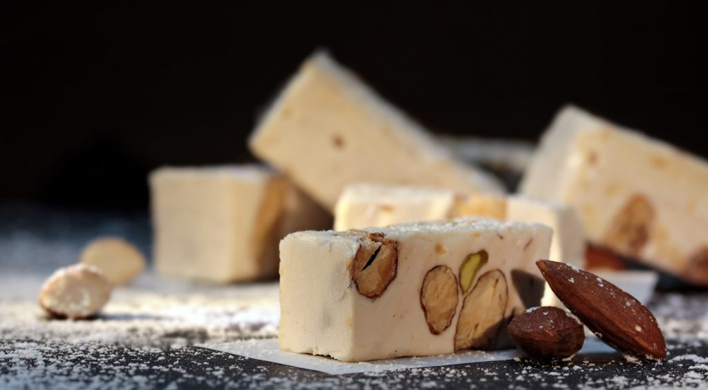

Saiba mais sobre o doce borrachudo que faz sucesso no natal!

O Torrone é um prato típico da culinária italiano, ou melhor, um doce típico italiano. O doce em formato de torrão é feito de um mix de amêndoas, claras, açúcar e mel. Existem duas versões da história de como surgiu o doce uma delas é que o doce foi inspirado de um doce árabe o Turun. E o nome deriva da palavra Torreo que significa torrar, visto que as amêndoas são tostadas.